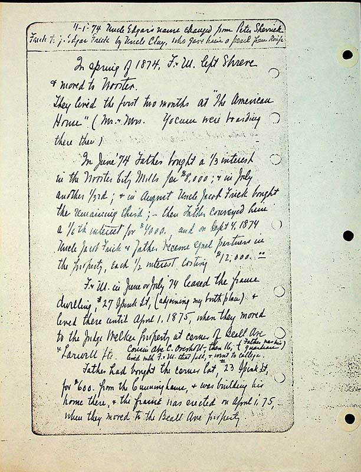

4-1-74 Uncle Edgar’s name changed from Peter Sherrick Frick to J Edgar Frick by Uncle Clay who gave him a pearl pen knife.
In spring of 1874, F & M left Shreve & moe to Wooster.
They lived the first two months at "The American Home” ( Mr. & Mrs. Yocum were boarding them there)
In June ‘74 Father bought a 1/3rd interest in the Wooster City Mills for $8,000, & in July another 1/3rd, & in August Uncle Jacob Frick bought the remaining third; - then Father conveyed him a 1/6th interest for $4,000, and on Sept 4, 1874 Uncle Jacob Frick & Father became equal partners in the property, each ½ costing $12,000.00
Father and mother in June or July ‘74 leased the frame dwelling , #27 Spink St, (adjoining my birthplace) & lived there until April 1, 1875, when they moved to the Judge Welker property at corner of Beall Ave & Larwill St. Cousin Abe C Overholt- then 16-(Father] was his guardian) lived with Father and mother that fall & went to college.
Father had bought the corner lot, #23 Spink St, for $600. From the Cunninghams, & was building his home there, & the frame was erected on April 1, ‘75, when they moved to the Beall Ave property.